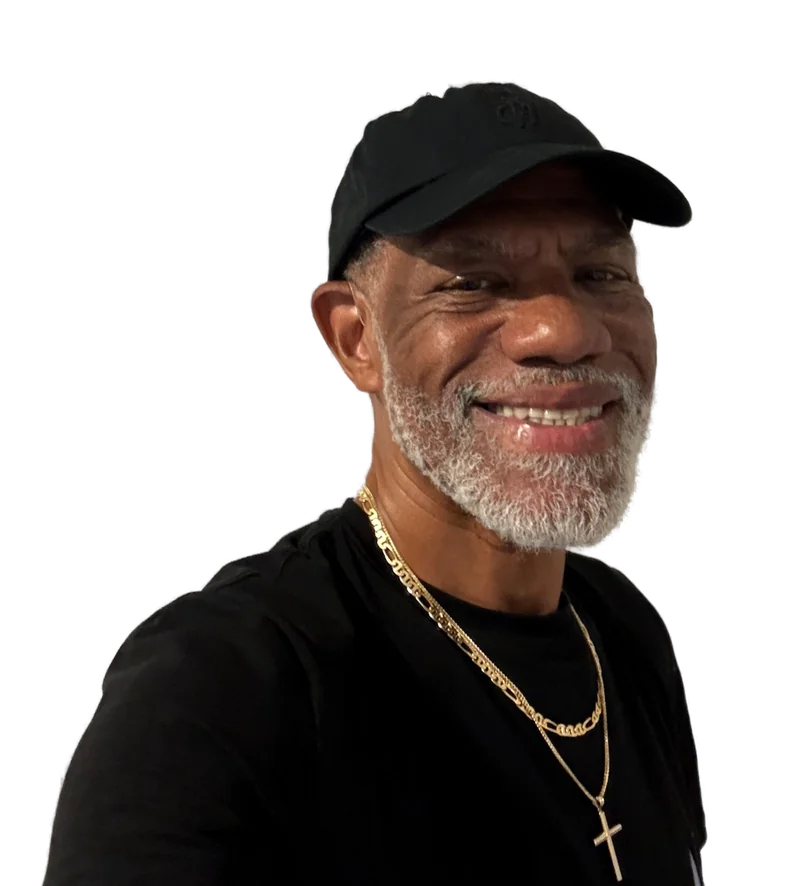

Your space, your people, your goals. We start by listening, then shape recommendations around what matters to you—from a more engaging guest experience to a more consistent personal routine.
01 / WHO WE SERVE
Three settings. One personal approach.
Considered support, tailored to the way you work, welcome, and live.
01
Gyms & studios
Give your members more reasons to return. Refine your programming, strengthen your service experience, and identify the right professional support.
Understand your goals, your current experience, and what is getting in the way.
02
Shape the plan.
Develop clear priorities and practical recommendations for your facility or personal routine.
03
Support the progress.
Review what is working and adapt the approach as your needs evolve.
03 / MEET TRAVIS
Starting over. Moving forward.
A personal journey. A purpose beyond himself.

The experience behind the intention.
After a hip replacement in October 2022, Travis rebuilt his fitness one consistent step at a time. Swimming, water aerobics, and regular gym sessions became part of a sustainable routine.
That journey shaped his belief that meaningful change begins with patience, personal attention, and a plan that fits real life.
Today, he is building Travis Fitness Consulting to bring that same thoughtful approach to gyms, hotels, and individuals in Columbus—with remote support available beyond the city.
TravisFOUNDER, TRAVIS FITNESS CONSULTING
YOUR NEXT CHAPTER
Let’s build what comes next.
Tell us a little about yourself and what you have in mind. Every engagement begins with a conversation.
Based in Columbus, Ohio In-person consulting & remote support Custom engagements · Inquire for rates